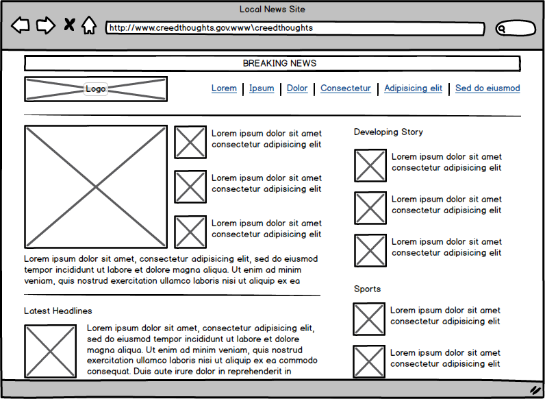

Turbocharging WP_Query
Matthew Boynes / @senyob / alleyinteractive.com
- We are a multi-platform dev agency
- WordPress.com VIP partner
- Hiring!
Disclaimer
Note: explained that this is a developer-focused topic
Whet the appetite
Note: Opened an example site with 500k posts, ran a normal WP_Query in ~11 seconds and a turbocharged one in .02 seconds.
* actual results may vary
Let's go back to the beginning...
- Working on a theme for a large news media company
- Theme to be used by many news sites
- Needed flexibility for complex regions of the site

Let's go back to the beginning...
- A UI for WP_Query
- What could possibly go wrong?
Performance Considerations
- Not all queries are created equal.
Performance Considerations
!=
The root of the problem
- Flexibility
- MySQL and our data schema (e.g. wp_postmeta)
The Solution
- Ghost!
</kidding> - Complement MySQL with another technology
something better at searching
The Solution
- "Searching" goes beyond keywords
- Structured search
- e.g. Searching for a flight
Cities, Dates, # Passengers, Layovers, Airline, ... - WP_Query
Categories, Tags, Authors, Meta, Dates, ...
Elasticsearch Overview
- What is Elasticsearch?
- Built for search
- Breaks data down into tokens
Elasticsearch Overview
WordPress → word
press
wordpress
Elasticsearch Overview
2014-09-06 → year: 2014
month: 9
day: 6
weekday: "sat"
Elasticsearch and WordPress
- Built in Java, but has a JSON REST API
- API is simple enough to use without plugins
- Plugins can assist with indexing data
- SearchPress
Powering WP_Query with ES
- Support native WP_Query arguments
- Build as a plugin
The Transplant: Overview
- Started with unit tests (thanks, core!)
- ES is supplemental; MySQL is canonical
- Get post IDs from ES, get the post data from MySQL
The Transplant: Take 1
Extend WP_Query
$query = new ES_WP_Query( array(
'post_type' => 'event',
'tax_query' => array( ... ),
) );
// ... or...
$posts = es_get_posts( array(
'post_type' => 'event',
'tax_query' => array( ... ),
) );
The Transplant: Take 1
- Requires manual intervention in your code
- No way to automatically integrate it
(e.g. based on args in pre_get_posts) - If the plugin gets deactivated, everything breaks
The Transplant: Take 2
Add a query var for WP_Query
$query = new WP_Query( array(
'es' => true,
'post_type' => 'event',
'tax_query' => array( ... ),
) );
// ... or...
$posts = get_posts( array(
'es' => true,
'post_type' => 'event',
'tax_query' => array( ... ),
) );
The Transplant: Take 2
Add a query var for WP_Query
Any problems? Only 44...
pre_get_posts, posts_search, posts_search_orderby, posts_where, posts_join, comment_feed_join, comment_feed_where, comment_feed_groupby, comment_feed_orderby, comment_feed_limits, posts_where_paged, posts_groupby, posts_join_paged, posts_orderby, posts_distinct, post_limits, posts_fields, posts_clauses, posts_selection, posts_where_request, posts_groupby_request, posts_join_request, posts_orderby_request, posts_distinct_request, posts_fields_request, post_limits_request, posts_clauses_request, posts_request, split_the_query, posts_request_ids, posts_results, comment_feed_join, comment_feed_where, comment_feed_groupby, comment_feed_orderby, comment_feed_limits, the_preview, the_posts, found_posts_query, found_posts, wp_search_stopwords, get_meta_sql, date_query_valid_columns, get_date_sql
The Transplant: Take 2
Add a query var for WP_Query
- Most of those hooks are very specific to MySQL
- Lots of room for conflict
The Transplant: Conclusion
- Class extension is safer
- Query var has more potential, but risky
- Decided to keep them both available
- WP_Query is too MySQL-focused
Other Challenges
- Lack of standard ES library required lots of flexibility
- Had to re-map ES several times, e.g. add date tokens. All for the better.
Considerations
- The more complex the query, the better the results
- The bigger the site, the better the results
- Have to maintain another service
Conclusion and Reflection
- Not that difficult to integrate the flavor-of-the-month data technologies
- The future: maybe a database-agnostic WP_Query method?
- Is it unreasonable to have multiple storage engines?
- Adding ES as a data layer could open up new doors for WordPress
- Example: Jetpack now uses ES to power Related Posts
The End
github.com/alleyinteractive/es-wp-query
github.com/alleyinteractive/searchpress
Want to do cool stuff like this?
We're hiring.
info@alleyinteractive.com